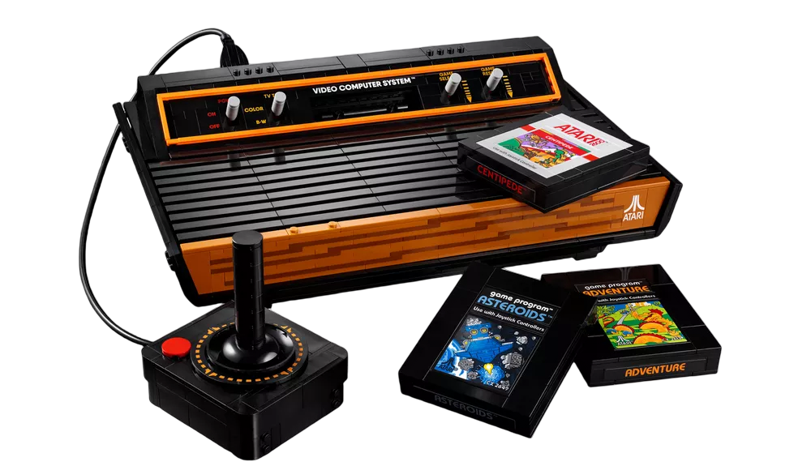

Embora já estejamos todos familiarizados com a maravilha que são os videogames, nem todos sabemos por toda a trajetória que esses passaram até chegarem no que são hoje. A seguir, confira um pouco do que foi essa longa história ,ou melhor, fase.
Em 1972 nasceu o primeiro console de videogame lançado na história, batizado de Magnavox Odyssey.
A ideia surgiu com Ralph Baer em 1966, com o intuito de criar algo que pudesse interagir com a TV.
O primeiro protótipo foi criado em 1968 e batizado como Brown Box (Caixa Marrom). Não durou muito para Baer vender o projeto para a Magnavox, subsidiária da Philips. Apesar de não suportar qualquer tamanho de tela de televisão, ter apenas 29 jogos e não reproduzir sons, o videogame rendeu um relativo sucesso para a época, e vendeu 100 mil unidades.
Dada a simplicidade dos processadores disponíveis, os jogos não tinham cores e ambientes complexos. Além disso, o jogador precisava colocar um filtro plástico, vendido com os game cards, na frente da tela da TV para dar a ilusão de linhas, cenários, cores e contornos durante o gameplay.
Para completar, o Odyssey era vendido com dados, fichas de poker, dinheiro de mentira e tabelas de pontuação. A ideia era que os jogadores encarassem o game como um tipo de jogo de tabuleiro digital, daí a necessidade desses acessórios curiosos.
Responsável por revolucionar a história dos games, o Atari foi lançado em 1977 e carrega histórias curiosas por trás. Em 1970, Nollan Bushnel consertava fliperamas em Utah, cidade que fazia faculdade. Após pedir demissão do emprego, mostrou sua ideia a um antigo colega, Ted Dabney, para criar um fliperama novo.
Apenas em 1972 os amigos nomearam o console de Atari, depois que uma construtora “roubou” o nome do antigo console Syzygy. Naquele ano foi lançado Pong, um dos principais jogos do fliperama.
O Atari foi ganhando forma com o tempo, mas ainda não era suficiente, já que os amigos queriam jogar o fliperama em casa. Em 1976 o primeiro protótipo de videogame doméstico foi lançado.
Com um videogame inovador para a época, Nollan poderia lançar qualquer jogo para consoles Atari. Partindo dessa ideia, Nolan e Tedy pediram ajuda de um garoto chamado Steve Jobs para montar o Breakout, um dos maiores sucessos da Atari.
O “fim do início” da Atari aconteceu em 1976 também. Steve Jobs saiu para fundar a Apple, Nollan Bushnell precisave de dinheiro para investir no game, então ele vendeu para a Warner. Daí em diante nasceu Pac-Man e Donk Kong, computadores e outras revoluções tecnológicas da segunda parte da Atari.
O Mega Drive da Sega chegou para criar mais uma geração de videogames com seus jogos de fitas. O console fez grande sucesso ao criar um controle com manoplas, mas principalmente por apresentar novas cores, gráficos e sons.
Quem não se lembra do Sonic? O jogo idealizado pela Sega era o principal concorrente do Super Mario Bros, herói dos consoles da Nintendo nos anos 90.
Na década de 90 foi grande sucesso e até hoje é possível encontrar consoles em bons estados de conservação. Assim como o Nintendo 64, o Mega Drive perdeu popularidade após a chegada da Sony com o Playstation 1.
Então surgiu o Playstation, que então dominou a história do videogame.
Tudo começou quando a Sony decidiu apostar nos jogos em CD, no entanto, a Nintendo achava cedo abandonar os cartuchos e fitas. Sem acordo, então ela se separaram.
O primeiro videogame da Sony, o famoso Playstation 1 chegou às lojas japonesas em 1994, ainda competindo com os consoles das gerações anteriores. De início não agradou ao público, era difícil adaptar aos novos gráficos e ao controle “moderno”. Contudo, duas características marcaram a história do mundo dos games pra sempre: o Memory Card e o Dual Stick.
O Memory Card era simplesmente um cartão que permitia salvar o jogo, e o usuário poderia continuar da onde parou. Não era algo novo, mas foi adaptado e melhorado, o que foi avaliado como fundamental pelos gamers da época.
Já o controle Dual Stick já caiu nas graças do público, e certamente contribuiu para o sucesso do console, além de influenciar novas gerações de videogames.
Além das grandes inovações, a Sony com seu Playstation 1 lançou jogos considerados icônicos, como Tomb Raider, Winning Elever, Resident Evil, Crash Bandicoot, entre outros.
Daí pra frente a Sony não parou mais, desenvolvendo e avançando tecnologicamente cada vez mais, lançou seus conhecidíssimos produtos que com certeza marcaram e ainda marcam a infância de muitos: o PlayStation 2, 3, 4 e 5.
No ano de 2001, era lançado no mercado um dos consoles de videogame mais vendido do mundo, o primeiro Xbox. A história do Xbox teve sua origem em uma empresa de tecnologia chamada de DirectX, que pertencia a Microsoft.
Foi quando quatro funcionários tiveram a ideia de criar um console de videogame que conseguisse concorrer com o da Sony. Assim, chegava ao mercado o Xbox, com o melhor console em termos de hardware da época.
A ideia da criação do console de videogame, Xbox, surgiu ainda em 1995. Foi quando a empresa de computadores Microsoft havia criado uma ferramenta tecnológica que auxiliava na criação de jogos para o Windows, chamada de DirectX.
Em 1998, uma equipe de desenvolvedores da Microsoft, composta por Kevin Bachus, Seamus Blackley e Ted Hase e o líder do DirectX, Otto Berkes, se reuniram para desenvolver um protótipo de videogame.
No entanto, vários outros modelos de consoles fizeram parte da história do Xbox, por exemplo, seu sucessor o Xbox 360, seguido pelo Xbox One, Xbox S, etc.
Entre os jogos que faziam parte do Xbox estavam, Halo, Fable, Forza Motorsport, Ninja Gaiden, Star Wars: Knights of the Old Republic, Tom Clancy’s Splinter Cell, Burnout 3: Takedown, entre outros. Porém, o grande sucesso do console da Microsoft foi o jogo de tiro, Halo, que teve seu lançamento exclusivo para o Xbox.
Atualmente, os jogos abriram as portas para um gigantesco universo que abrange pessoas de todas as idades e interesses unidas pela paixão em se desafiar tentando passar de uma fase ou só se divertindo com uma aventura leve e divertida.